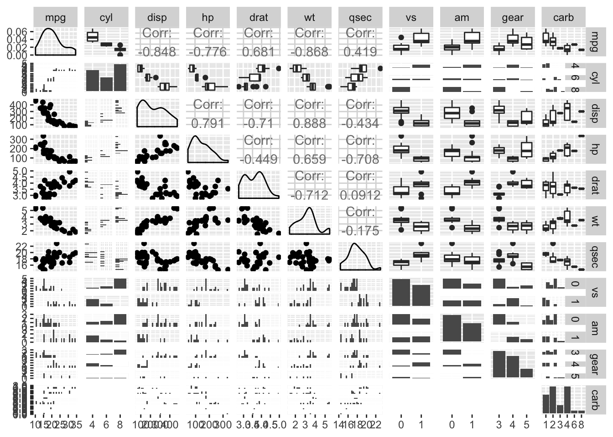
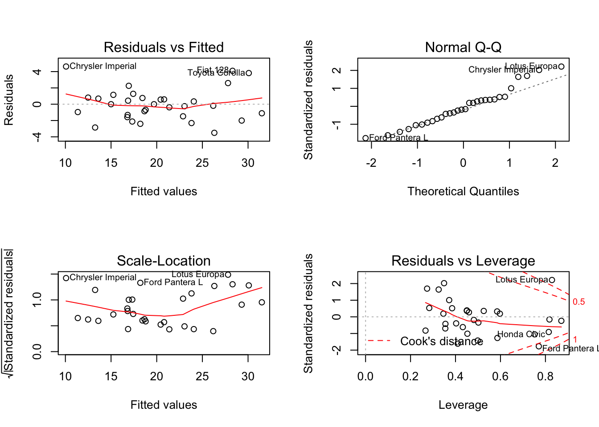
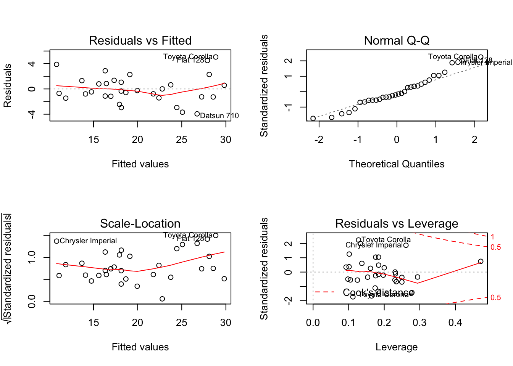
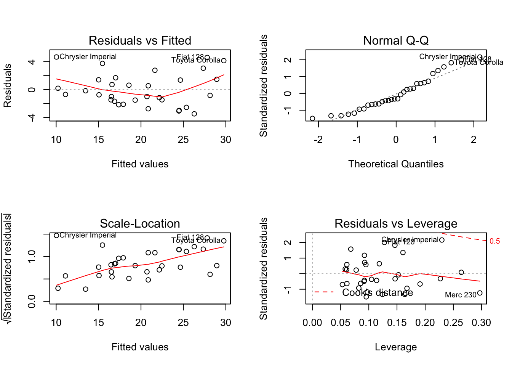
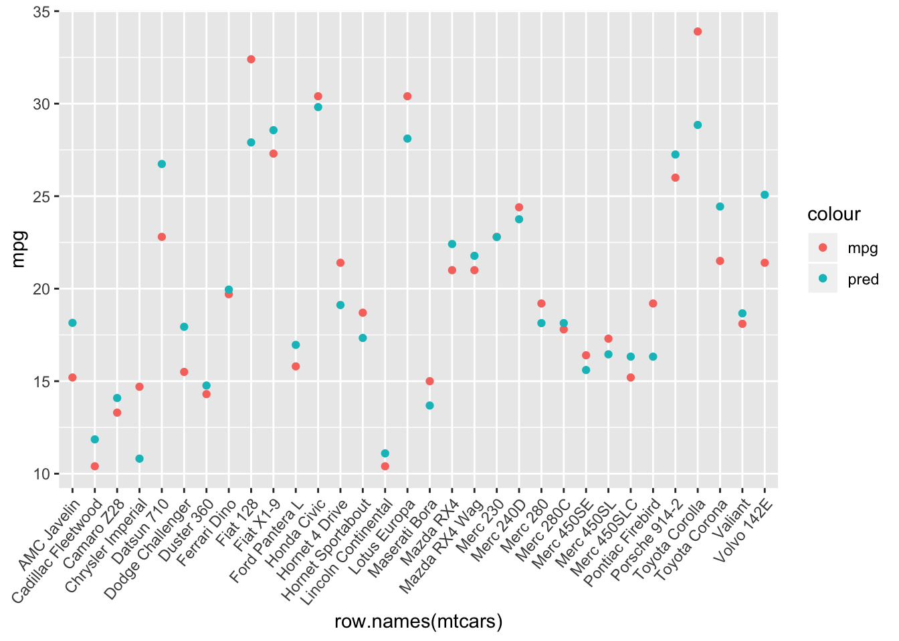
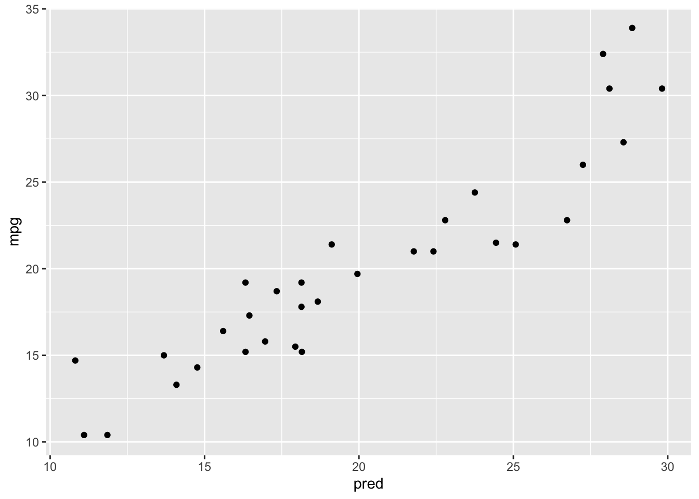
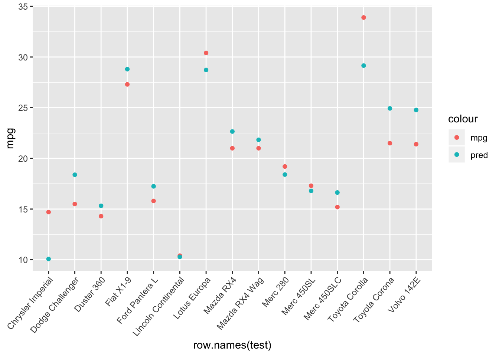
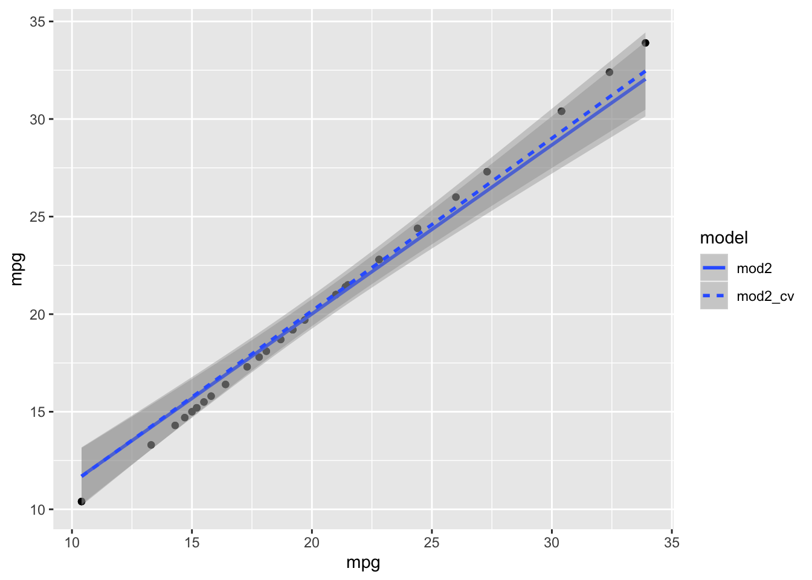

Our first step is to import the data and clean it up.
data("mtcars")
mtcars$gear = factor(mtcars$gear)
mtcars$vs = factor(mtcars$vs)
mtcars$am = factor(mtcars$am)
mtcars$carb = factor(mtcars$carb)
mtcars$cyl = factor(mtcars$cyl)Now we will explore the data and see what correlations there might be.
ggpairs(mtcars)
Based on those graphs we made a few models to be tested.
mod1 = lm(mpg ~ cyl+disp+hp+drat+wt+qsec+vs+am+gear+carb ,mtcars)
mod2 = lm(mpg ~ cyl + hp + wt + am ,mtcars)
mod3 = lm(mpg ~ wt + qsec + am ,mtcars)Now let’s summarize them to see how good they are.
summary(mod1)##
## Call:
## lm(formula = mpg ~ cyl + disp + hp + drat + wt + qsec + vs +
## am + gear + carb, data = mtcars)
##
## Residuals:
## Min 1Q Median 3Q Max
## -3.5087 -1.3584 -0.0948 0.7745 4.6251
##
## Coefficients:
## Estimate Std. Error t value Pr(>|t|)
## (Intercept) 23.87913 20.06582 1.190 0.2525
## cyl6 -2.64870 3.04089 -0.871 0.3975
## cyl8 -0.33616 7.15954 -0.047 0.9632
## disp 0.03555 0.03190 1.114 0.2827
## hp -0.07051 0.03943 -1.788 0.0939 .
## drat 1.18283 2.48348 0.476 0.6407
## wt -4.52978 2.53875 -1.784 0.0946 .
## qsec 0.36784 0.93540 0.393 0.6997
## vs1 1.93085 2.87126 0.672 0.5115
## am1 1.21212 3.21355 0.377 0.7113
## gear4 1.11435 3.79952 0.293 0.7733
## gear5 2.52840 3.73636 0.677 0.5089
## carb2 -0.97935 2.31797 -0.423 0.6787
## carb3 2.99964 4.29355 0.699 0.4955
## carb4 1.09142 4.44962 0.245 0.8096
## carb6 4.47757 6.38406 0.701 0.4938
## carb8 7.25041 8.36057 0.867 0.3995
## ---
## Signif. codes: 0 '***' 0.001 '**' 0.01 '*' 0.05 '.' 0.1 ' ' 1
##
## Residual standard error: 2.833 on 15 degrees of freedom
## Multiple R-squared: 0.8931, Adjusted R-squared: 0.779
## F-statistic: 7.83 on 16 and 15 DF, p-value: 0.000124summary(mod2)##
## Call:
## lm(formula = mpg ~ cyl + hp + wt + am, data = mtcars)
##
## Residuals:
## Min 1Q Median 3Q Max
## -3.9387 -1.2560 -0.4013 1.1253 5.0513
##
## Coefficients:
## Estimate Std. Error t value Pr(>|t|)
## (Intercept) 33.70832 2.60489 12.940 7.73e-13 ***
## cyl6 -3.03134 1.40728 -2.154 0.04068 *
## cyl8 -2.16368 2.28425 -0.947 0.35225
## hp -0.03211 0.01369 -2.345 0.02693 *
## wt -2.49683 0.88559 -2.819 0.00908 **
## am1 1.80921 1.39630 1.296 0.20646
## ---
## Signif. codes: 0 '***' 0.001 '**' 0.01 '*' 0.05 '.' 0.1 ' ' 1
##
## Residual standard error: 2.41 on 26 degrees of freedom
## Multiple R-squared: 0.8659, Adjusted R-squared: 0.8401
## F-statistic: 33.57 on 5 and 26 DF, p-value: 1.506e-10summary(mod3)##
## Call:
## lm(formula = mpg ~ wt + qsec + am, data = mtcars)
##
## Residuals:
## Min 1Q Median 3Q Max
## -3.4811 -1.5555 -0.7257 1.4110 4.6610
##
## Coefficients:
## Estimate Std. Error t value Pr(>|t|)
## (Intercept) 9.6178 6.9596 1.382 0.177915
## wt -3.9165 0.7112 -5.507 6.95e-06 ***
## qsec 1.2259 0.2887 4.247 0.000216 ***
## am1 2.9358 1.4109 2.081 0.046716 *
## ---
## Signif. codes: 0 '***' 0.001 '**' 0.01 '*' 0.05 '.' 0.1 ' ' 1
##
## Residual standard error: 2.459 on 28 degrees of freedom
## Multiple R-squared: 0.8497, Adjusted R-squared: 0.8336
## F-statistic: 52.75 on 3 and 28 DF, p-value: 1.21e-11Then let’s diagnose them.
par(mfrow=c(2,2)) #to show graphs in 2x2 grids
plot(mod1)
plot(mod2)
plot(mod3)
Based on all that model 2 is looking like the best model.
First we need to make a dataframe with the variables just from mod2.
df = data.frame(cyl = mtcars$cy, hp = mtcars$hp, wt = mtcars$wt, am =mtcars$am, row.names = row.names(mtcars))Then we will add predictions to the dataframe.
mtcars$pred = predict(mod2, df)Predictions compared to actual (two seperate visualizations).
ggplot(mtcars, aes(x=row.names(mtcars)))+
geom_point(aes(y=mpg, color="mpg"))+
geom_point(aes(y=pred, color="pred"))+
theme(axis.text.x = element_text(angle = 50, hjust = 1))
ggplot(mtcars, aes(x=pred, y=mpg)) + geom_point()
Looks pretty good to me, let’s see how the model holds up when we split up the data and test it on seperate sets.
We start by splitting the dataset in half.
set.seed(666)
set = caret::createDataPartition(mtcars$mpg, p=.5)
set = set$Resample1
train = mtcars[set,]
test = mtcars[-set,]Then we will train the model using half of the data set.
mod2_cv = lm(data=train, formula = formula(mod2))Now with the trained model we will make predictions on the other half of the dataset and add them to it.
test$pred = predict(mod2_cv, test)Now let’s plot the predicted to the actual
ggplot(test,aes(x=row.names(test)))+
geom_point(aes(y=mpg, color="mpg"))+
geom_point(aes(y=pred, color="pred"))+
theme(axis.text.x = element_text(angle = 50, hjust = 1))
Lets compare the residuals and summaries of the trained model to the original.
mean(residuals(mod2)^2)## [1] 4.71955mean((test$pred - test$mpg)^2)## [1] 5.998102summary(mod2)##
## Call:
## lm(formula = mpg ~ cyl + hp + wt + am, data = mtcars)
##
## Residuals:
## Min 1Q Median 3Q Max
## -3.9387 -1.2560 -0.4013 1.1253 5.0513
##
## Coefficients:
## Estimate Std. Error t value Pr(>|t|)
## (Intercept) 33.70832 2.60489 12.940 7.73e-13 ***
## cyl6 -3.03134 1.40728 -2.154 0.04068 *
## cyl8 -2.16368 2.28425 -0.947 0.35225
## hp -0.03211 0.01369 -2.345 0.02693 *
## wt -2.49683 0.88559 -2.819 0.00908 **
## am1 1.80921 1.39630 1.296 0.20646
## ---
## Signif. codes: 0 '***' 0.001 '**' 0.01 '*' 0.05 '.' 0.1 ' ' 1
##
## Residual standard error: 2.41 on 26 degrees of freedom
## Multiple R-squared: 0.8659, Adjusted R-squared: 0.8401
## F-statistic: 33.57 on 5 and 26 DF, p-value: 1.506e-10summary(mod2_cv)##
## Call:
## lm(formula = formula(mod2), data = train)
##
## Residuals:
## Min 1Q Median 3Q Max
## -3.9403 -0.7894 0.0049 0.8223 4.4488
##
## Coefficients:
## Estimate Std. Error t value Pr(>|t|)
## (Intercept) 35.81724 4.75565 7.532 1.15e-05 ***
## cyl6 -2.60425 2.15679 -1.207 0.2526
## cyl8 -1.54020 3.28708 -0.469 0.6485
## hp -0.03057 0.02024 -1.510 0.1591
## wt -3.21201 1.65134 -1.945 0.0778 .
## am1 1.21814 2.53562 0.480 0.6403
## ---
## Signif. codes: 0 '***' 0.001 '**' 0.01 '*' 0.05 '.' 0.1 ' ' 1
##
## Residual standard error: 2.447 on 11 degrees of freedom
## Multiple R-squared: 0.8787, Adjusted R-squared: 0.8235
## F-statistic: 15.93 on 5 and 11 DF, p-value: 0.0001025Final comparison of the two models.
df = gather_predictions(mtcars, mod2,mod2_cv)
ggplot(df, aes(x=mpg)) +
geom_point(aes(y=mpg)) +
geom_smooth(method = "lm",aes(linetype=model,y=pred))
Model 2 was the best model I was able to come up with, its R^2 value was 0.8659 while the version of model 2 trained for a smaller data set was 0.8787. While the residuals increased it wasn’t by too much. The most useful indicator of the best model was the 4 graphs I made of each. Further on I tried to explain the best with graphs but after you have 2 or 3 variables it’s hard to visualize on a graph. Training it with just half the dataset is also useful to see if the model will adapt to different data or if it’s too specific to the current data.